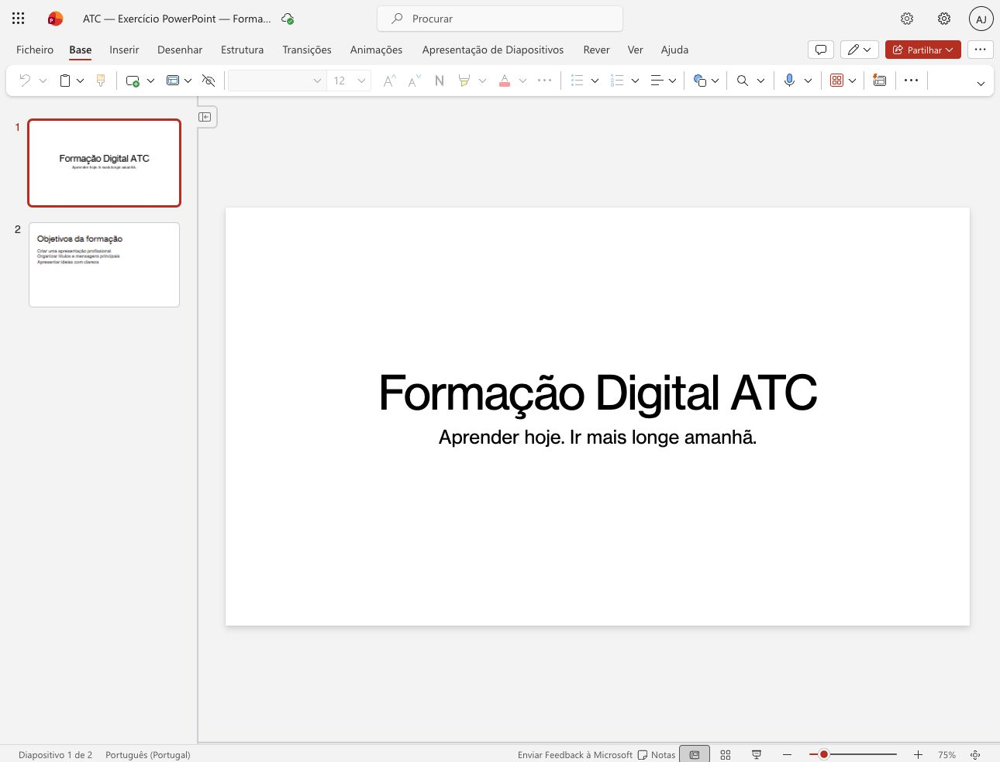
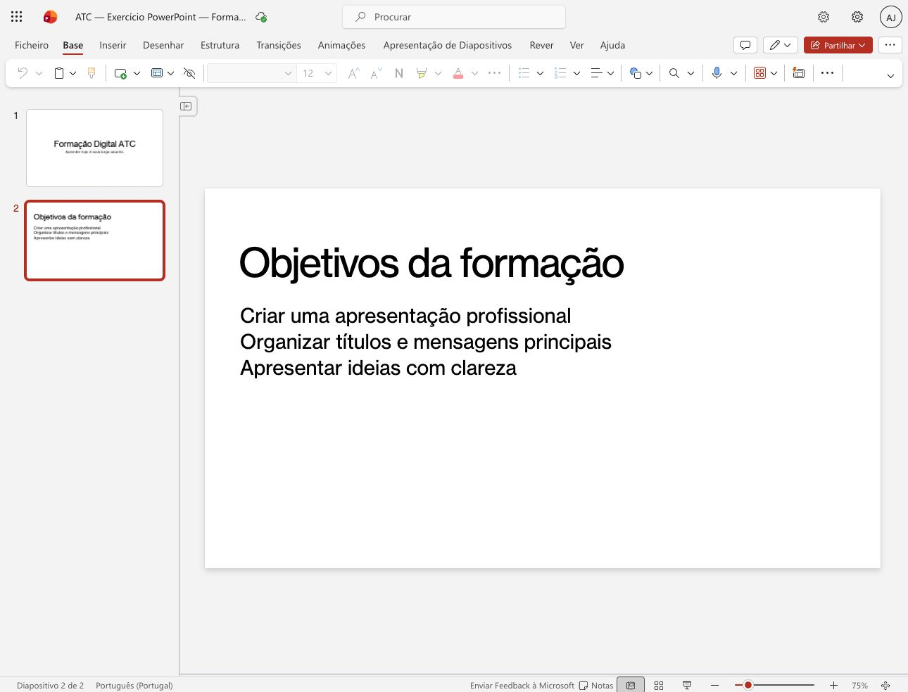

ATC · EXEMPLO 01Apresentar o tema no primeiro diapositivo
O título e uma frase de apoio orientam o público.

Captura própria ATC · Microsoft PowerPoint para a Web · Português (Portugal).- Selecione a primeira miniatura à esquerda.
- Escreva um título que identifique o tema.
- Acrescente uma frase curta que explique o propósito.
Verifique: O diapositivo apresenta Formação Digital ATC e uma mensagem de apoio.
ATC · EXEMPLO 02Organizar os objetivos da apresentação
O segundo diapositivo comunica três objetivos em frases curtas.

Captura própria ATC · Microsoft PowerPoint para a Web · Português (Portugal).- Selecione a segunda miniatura.
- Use um título informativo: Objetivos da formação.
- Liste apenas os objetivos essenciais, com uma ideia por linha.
Verifique: Confirme que o título e os três objetivos são legíveis e seguem uma ordem clara.